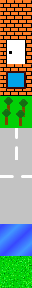
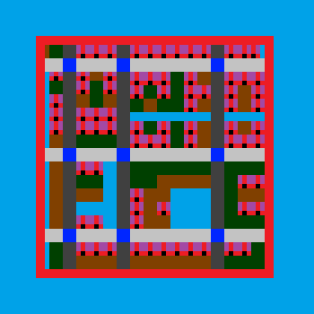
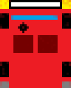

{kind=link}
{kind=link}
{kind=link}

A video game for the Discovery kit with STM32F429ZI. In the game you control a car with the touch screen. Tilemapped graphics, vehicle and collision physics. The source code is available here.
Video of the game:
The development board has a touch screen and accelerometer:
Photos of the game:
The map is a rectangular array of indicies, each index indicates which texture to draw at that location.
The tileset:

The palette:
The map:

//Draw the map
void draw_map(int cx, int cy)
{
int startx = max(0, cx / TILE_SIZE);
int starty = max(0, cy / TILE_SIZE);
int endx = min(MAP_WIDTH-1, (cx+SCREEN_WIDTH) / TILE_SIZE);
int endy = min(MAP_WIDTH-1, (cy+SCREEN_HEIGHT) / TILE_SIZE);
for (int x = startx; x <= endx; x++)
{
for (int y = starty; y <= endy; y++)
{
draw_tile(map[y * MAP_WIDTH + x], x * TILE_SIZE - cx, y * TILE_SIZE - cy);
}
}
}
//Draw one tile
void draw_tile(int ix, int offsetx, int offsety)
{
if (offsetx <= -TILE_SIZE || offsety <= -TILE_SIZE || offsetx >= 240 || offsety >= 320)
{
//tile is out of screen, don't draw anything
return;
}
else if (offsetx >= 0 && offsety >= 0 && offsetx < 240 - TILE_SIZE && offsety < 320 - TILE_SIZE)
{
//tile is fully inside the screen
BSP_LCD_DrawBitmap_Tile32(offsetx, offsety, ix, &tilemap);
}
else
{
//tile is partially in the screen, check each pixel
for (int i = 0; i < TILE_SIZE; i++)
{
for (int j = 0; j < TILE_SIZE; j++)
{
if (offsetx + i >= 0 && offsetx + i < 240 && offsety + j >= 0 && offsety + j < 320)
{
BSP_LCD_DrawPixel(offsetx + i, offsety + j, tilemap[i + ix * TILE_SIZE * TILE_SIZE + j * TILE_SIZE]);
}
}
}
}
}
Calculate the distance from every nearby tile and if they are too close, push the car in the opposite direction.
void simulate_collision() {
int startx = max(0, (int)(px / TILE_SIZE) - 2);
int starty = max(0, (int)(py / TILE_SIZE) - 2);
int endx = min(MAP_WIDTH - 1, (int)(px / TILE_SIZE) + 2);
int endy = min(MAP_HEIGHT - 1, (int)(py / TILE_SIZE) + 2);
for(int x = startx; x <= endx; x++)
{
for(int y = starty; y <= endy; y++)
{
float centerx = x * 32 + 16;
float centery = y * 32 + 16;
float dx = px - centerx;
float dy = py - centery;
const float force = 1.5;
float d = hypot(dx, dy);
int id = map[y * MAP_WIDTH + x];
if(d < 100 && (id == 0 || id == 1 || id == 2 || id == 3 || id == 7))
{
float ang = atan2(dy, dx);
float f = max(0, 10 - d / 4) * force;
vx += f * cos(ang);
vy += f * sin(ang);
}
}
}
}
The car has a position (px, py) and velocity (vx, vy) vector, also the rotation speed (omega) and the direction (phi) is stored.

void simulate_movement(int touch, float an) { //kocsi mozgásának szimulációja
//if touched, accelerate the car
if (touch) {
const float acceleration = 1;
float delta_v_touch = cos(phi) * cos(an) + sin(phi) * sin(an);
vx += cos(an) * delta_v_touch * acceleration;
vy += sin(an) * delta_v_touch * acceleration;
}
//slow down velocity
const float resistance_linear = .05;
vx -= vx * resistance_linear;
vy -= vy * resistance_linear;
const float resistance_quadratic = .01;
vx -= (vx > 0 ? 1 : -1) * vx * vx * resistance_quadratic;
vy -= (vy > 0 ? 1 : -1) * vy * vy * resistance_quadratic;
//if touched, rotate the car
if (touch) {
const float rot_speed = .05;
omega += angle_diff(phi, an) * rot_speed;
}
//slow down rotation
const float rot_resistance = .2;
omega -= omega * rot_resistance;
//limit rotation
const float rot_limit = .3;
float rot_angle = limit(omega, -rot_limit, rot_limit);
//rotate velocity vector
vx = vx * cos(rot_angle) + vy * -sin(rot_angle);
vy = vx * sin(rot_angle) + vy * cos(rot_angle);
//move car
px += vx;
py += vy;
//rotate car
phi += omega;
//limit rotation value to [-pi, pi]
phi = fmod(phi + M_PI, 2 * M_PI);
phi -= M_PI;
}